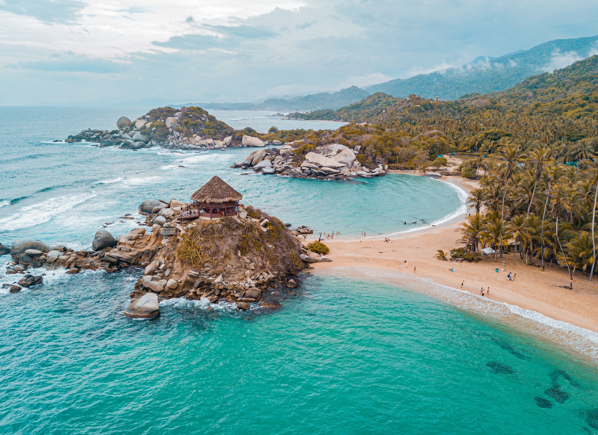

Santa Marta
Descubre Santa Marta:
Bienvenidos a Santa Marta, una ciudad costera en el norte de Colombia, donde la majestuosidad de la Sierra
Nevada de Santa Marta se encuentra con las aguas cristalinas del mar Caribe. Sumérgete en la riqueza
cultural de esta tierra, donde la historia precolombina se mezcla con la vibrante vida moderna.
Explora el encantador centro histórico de Santa Marta, con sus calles empedradas y coloridas casas
coloniales que te transportan en el tiempo. Visita la Quinta de San Pedro Alejandrino, donde murió Simón
Bolívar, y descubre su legado histórico en el Museo Bolivariano.
Embárcate en una aventura hacia el Parque Nacional Natural Tayrona, un paraíso ecológico donde la selva se
encuentra con el mar, creando paisajes impresionantes y playas de ensueño. Haz senderismo por sus senderos
naturales, nada en sus aguas turquesas y relájate bajo la sombra de las palmeras.
No te pierdas la oportunidad de explorar las antiguas ruinas de la Ciudad Perdida, una ciudad precolombina
construida por los indígenas Tayrona hace más de mil años. Sumérgete en la magia de este lugar ancestral
mientras caminas entre terrazas de piedra y exuberante vegetación.
Disfruta de la deliciosa gastronomía caribeña en los restaurantes locales, donde podrás saborear platos
tradicionales como el pescado frito, el arroz con coco y las arepas de huevo. Refréscate con una deliciosa
limonada de coco o un jugo de frutas frescas mientras contemplas la puesta de sol sobre el mar.
Santa Marta te espera con sus playas doradas, su exuberante naturaleza y su hospitalidad caribeña. Ven y
descubre la belleza de este destino único en Colombia, donde cada momento es una aventura y cada rincón
tiene una historia que contar. ¡Bienvenidos a Santa Marta, la puerta de entrada al paraíso caribeño!